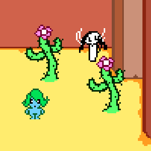

A World In Her Eye - 2017

A small collection of games I've made and released. My main releases were entries for the Ludum Dare game jam, where all participants have to make a game within 48 hours. I do hope to make more expansive games someday though!
This page includes a download link (click each game's image), a description & several reviews from each game's comments section.
A World In Her Eye - 2017
Qora has lived as a wheat farmer on her own small planet for as long as she can remember. Her only light sources being a few lamps and a small star of sorts tied to her own planet and spending her days staring at the sky, her life is rather monotonous.
"Wow, just wow. The look and the music and the creativity - a nice little adventure game. Great job with this!"
-chunkybrewster
"Great game and beautiful art, specially when you are going from one planet to another. I was a little lost, like didn’t know where to go or what to do, but in some way it created a more unique experience. Great game!"
-bendev-games
"Different from all the other games I’ve played so far, I liked the exploration and gathering different items."
-mundell
Paynplayne - 2019
You have finally sprouted as a being whose body can turn PAIN into GOLD.
Your creator, M, a witch, has a simple task for you: Bring a letter to her sister at the other end of the Paynplayne…
This entry received 8th place in audio, 13th place in theme, and 18th place in humor.
"Very coherent game as a whole, fits perfectly the theme. I wish I could do as much (and as good) in 48h!"
-marcus-gambit
"Such a fun and beautiful game!!! The graphics are spot on, wow. nice to see female characters for a change! Also, so much stuff in 48 hours, kudos"
-christina-antoinette-nefotistou
"Witchy Capitalism. Harsh."
-solifuge